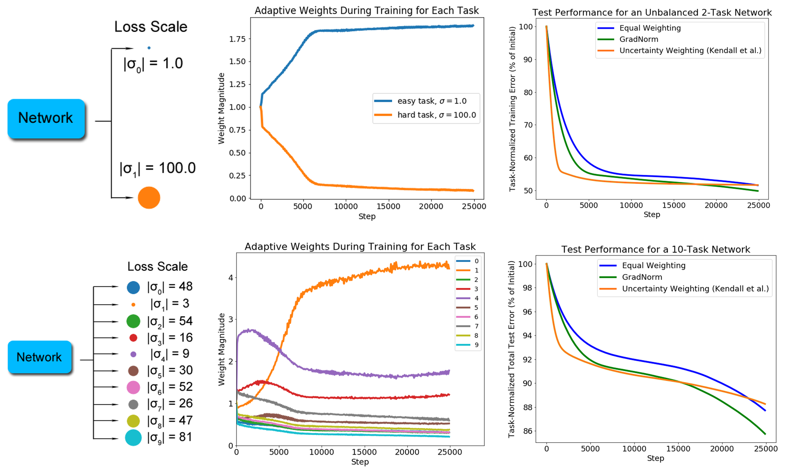

GradNorm learns one loss weight per task so that every task’s gradient has a similar size and every task learns at a similar pace.
On this page
The introduction lists three causes of negative transfer (training tasks together making one of them worse than training it alone) when training on the plain sum of task losses. GradNorm, introduced by Chen, Badrinarayanan, Lee and Rabinovich (2018), fixes the first two, scale and speed. At every training step it measures each task’s gradient norm (the gradient’s length) and how far each task has progressed. It then adjusts one loss weight per task so that each gradient norm moves toward a target, and the target is higher for a task that is behind. Between steps it keeps the K loss weights, their optimizer state and each task’s starting loss. Each step costs one extra gradient per task at the last shared layer, about 5 percent more training time in the paper.
Several tasks share one trunk, the part of the model every task uses; each task also has its own small head. Task losses often sit on very different scales, for example a depth loss near 800 and a classification loss near 2. In the plain sum the larger loss dominates. Even with similar losses, one task can have much larger gradients on the shared parameters, so the trunk moves mostly for that task. Hand-tuned loss weights also go out of date as training progresses.
A task dominates through the size of its gradient, so GradNorm measures and evens out the gradient norm, the gradient’s length. GradNorm is a loss-weighting method: it changes each task’s weight, never the gradients’ directions. Gradient methods such as PCGrad edit directions instead.
With K tasks, GradNorm gives each task i a loss weight wi that multiplies its loss. Every step it adjusts the weights toward two goals. First, every task’s weighted gradient norm should be about the same. Second, a task whose loss is falling more slowly than the others should get a larger gradient norm until it catches up. One hyperparameter, α, sets how strongly the second goal acts.
Each step has four parts: measure each task’s gradient norm, set each task’s target norm, move the weights toward the targets, and rescale the weights so they sum to K. The weights start at 1. Sections 4 and 5 define each part, and Figure 3 then steps through one update.
The gradient norm says how strongly each task pushes on the shared weights. The loss ratio says how much of its starting loss each task still has. The relative inverse training rate compares that ratio with the other tasks. The norms are measured only at the last shared layer, whose weights are W; the paper chose it to keep the extra cost small.
Running example, NYUv2 indoor photos: semantic segmentation (seg, a class per pixel) and depth (metres per pixel), illustrative.
| seg | depth | |
|---|---|---|
| gradient on two shared weights | (2, 1) | (−6, 2) |
| GW at w = 1 | 2.236 | 6.325 |
Dividing each loss by its value at the start of training gives a number with no units: 1 at the start, smaller as the task learns. The paper calls it the inverse training rate, because a small value means the task learned fast. For a classification task whose starting loss depends strongly on the random initialization, the paper suggests the theoretical starting value log C for C classes instead.
Running example (illustrative).
| seg | depth | |
|---|---|---|
| loss ratio | 0.8 | 0.5 |
Each task’s loss ratio is then divided by the average ratio over all tasks. A value above 1 means the task is behind the others; below 1 means it is ahead.
Running example, mean ratio 0.65 (illustrative).
| seg | depth | |
|---|---|---|
| ri | 1.231, behind | 0.769, ahead |
The average fixes the scale problem. The factor fixes the speed problem.
Running example, ḠW = 4.280 and α = 1.5, the value the GradNorm paper used on NYUv2 (illustrative pair).
| seg | depth | |
|---|---|---|
| length now | 2.236 | 6.325 |
| target Ti | 5.844 | 2.888 |
GradNorm then defines a loss on the weights that measures how far each norm is from its target, and lowers it with an ordinary optimizer.
Running example at w = 1, Lgrad = 3.608 + 3.437 = 7.045 (illustrative).
| seg | depth | |
|---|---|---|
| gap to target | 3.608 | 3.437 |
Two rules keep the weight update well behaved.
Running example, K = 2 (illustrative).
| seg | depth | |
|---|---|---|
| weight that hits the target | 2.614 | 0.457 |
| after rescaling, sum 2 | 1.703 | 0.297 |
Figure 3. Task 1 is behind with small gradients, task 2 ahead with large ones.
The stepper’s own toy, not the running example: task 2’s gradient is 100 times longer, and step 2 sets α = 0.5.
| task 1 | task 2 | |
|---|---|---|
| loss ratio | 0.95 | 0.40 |
| ri | 1.41 | 0.59 |
| weight after one step (sum 1.8515) | 1.0015 | 0.85 |
| after rescaling to sum 2 | about 1.08 | about 0.92 |
The simulation is a schematic model, not a real network. Each step, each task’s loss shrinks by about 2 percent times its share of the total gradient norm.
(a) task 1 loss (small gradients), log scale
(b) the loss weights GradNorm learns (sum 2, α = 0.5)
Figure 4. GradNorm (purple) raises w1 early, and task 1 learns sooner.
The paper built two small artificial systems, one with 2 tasks and one with 10. Each task’s target outputs are multiplied by a different scale σ, so its squared loss grows with σ2. Here σ is only that loss scale, not the noise level of the same name on the Uncertainty Weighting page. The tasks differ only in loss scale, so evening out the gradient norms does all the work. The task-normalized loss divides each task’s loss by its starting loss and sums them, so large and small scales count equally.

Figure 5. The toy networks and their loss scales σ. From the paper’s Figure 2.
Figure 6. Small-σ tasks end with larger weights. From the paper’s Figure 2.
Figure 7. GradNorm ends below equal weights. From the paper’s Figure 2.
From the paper's Figure 2 (arXiv:1711.02257): “Gradient Normalization on a toy 2-task (top) and 10-task (bottom) system. …”
GradNorm runs once every training step, on that step’s batch. Its state is the K weights, their optimizer and each task’s starting loss. Its extra cost is one gradient per task down to the last shared layer, plus a second-order term through that layer; the paper measured about 5 percent more training time on NYUv2. The weighted loss is backpropagated as usual, so the heads also receive gradients scaled by wi (Section 3 of Gradient Balancing Inside the Training Loop compares this with methods that write into the shared gradients).
This step follows the paper’s Algorithm 1. W is the last shared layer’s weight tensor, params holds all network parameters, losses holds the K batch-mean losses and L0 the losses at step 0. GRAPH passes create_graph=True to grad, which makes each norm G differentiable with respect to w; RETAIN passes retain_graph=True, which keeps the graph for the network step; detach() holds the target T fixed.
import torch
from torch.autograd import grad
from torch.optim import Adam
ALPHA = 1.5 # NYUv2 in the paper
RETAIN = dict(retain_graph=True)
GRAPH = dict(create_graph=True)
w = torch.ones(K).requires_grad_()
opt_w = Adam([w], lr=0.025)
opt = Adam(params, lr=2e-5)
def gradnorm_step(losses, L0, W):
L = torch.stack(losses)
G = []
for k in range(K):
wL = w[k] * L[k]
g_k, = grad(wL, W, **GRAPH)
G.append(g_k.norm())
G = torch.stack(G)
ratio = L.detach() / L0
r = ratio / ratio.mean()
T = G.mean() * r ** ALPHA
T = T.detach() # fixed target
L_grad = (G - T).abs().sum()
gw, = grad(L_grad, w, **RETAIN)
opt.zero_grad()
total = (w.detach() * L).sum()
total.backward()
opt.step()
w.grad = gw
opt_w.step()
with torch.no_grad():
w.mul_(K / w.sum())detach() matters: a target that can move lets every weight shrink together.| Setting | Paper value (NYUv2) |
|---|---|
| Weight learning rate | 0.025 with Adam, about 1250 times the network’s |
| Network learning rate | 2×10−5 with Adam |
| Batch size | 24 |
| α | 1.5 |
| Starting weights | 1 |
| Extra training time | about 5 percent |
The paper does not say how raising or lowering the weight learning rate changes the result. There is no official code. LibMTL ships a version (--weighting GradNorm) that differs from the paper: by default it measures norms over the whole shared encoder instead of the last shared layer, it keeps the weights summing to K through a softmax instead of rescaling, and it trains the heads on the unweighted losses.
Gradient Balancing Inside the Training Loop covers how the weights interact with the optimizer in Sections 9.1 and 7.1.
The hyperparameter α sets how strongly a task that is behind is pushed to catch up. Raising it pushes the weights further apart and cuts fast-learning tasks harder; lowering it toward 0 leaves only the equal-norm goal. The more the tasks differ, the larger the best α.
| α | What it means or what the paper found |
|---|---|
| 0 | Every target is the average norm, so only the gradient norms are equalized |
| 0.12 | Toy tasks that differ only in loss scale |
| 0.2 to 0.3 | Face-landmark dataset (MTFL) |
| 1.5 | NYUv2: depth, surface normals and room-layout keypoints in one network |
| 1.75 | NYUv2: the depth weight fell below 0.02 |
| 0 to 3 | NYUv2: almost any value beat equal weights |
| above 2 | A VGG16 network’s weights became unstable |
At α = 0 only the norms are equalized
The norms are equalized, so the weight rises, but being behind adds nothing.
At α = 0.5 the weight rises further
The gap above the α = 0 line is the extra rise from being behind.
At α = 2 the weight rises fastest
The weight overshoots a little, then settles.
Reach for it when tasks have very different loss scales or learn at very different speeds. The classic case is dense prediction, one prediction per pixel, such as segmentation, depth and surface normals in one network.
It costs one extra gradient per task down to the last shared layer, about 5 percent more training time on NYUv2.
It does not come with a convergence proof, and it ignores gradient direction. Two gradients with equal norms can still point against each other.
GradNorm sets the weights from training speed. Uncertainty Weighting sets them from how noisy each task is.
Two methods learn each task’s loss weight (GradNorm and Uncertainty Weighting). Four methods edit the task gradients (PCGrad, GradVac, CAGrad and MGDA). The question each one answers:
| Method | The question it answers |
|---|---|
| GradNorm (this page) | How much weight should each task's loss get so all tasks train at a similar rate? (learned during training from how fast each loss falls) |
| Uncertainty Weighting | How much weight should each task's loss get, given how noisy that task's targets are? (the noise level is learned along with the model) |
| PCGrad | How should a task gradient be edited when it conflicts with another task's gradient? |
| GradVac | How should each pair of task gradients be moved toward a target cosine, a running average of that pair's past cosines? |
| CAGrad | How can a step raise the smallest per-task improvement while staying near the average gradient? |
| MGDA | Which convex combination of task gradients lowers every task's loss at once, and when does no such combination exist? |